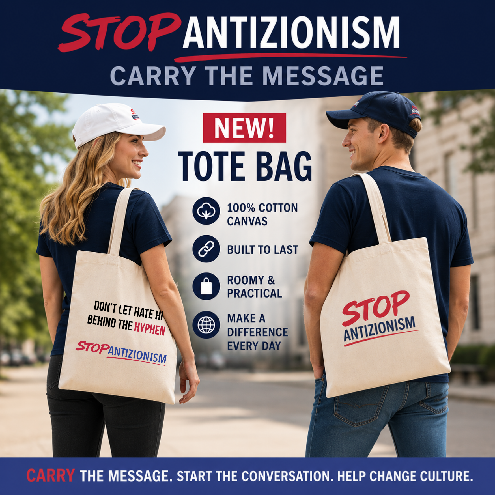

Marketplace
Carry the Message™ – Stop Antizionism Drop The Hyphen Tote Bag
US$26.99
US$26.99
Carry the message wherever you go. This durable 100% cotton canvas tote bag is designed for everyday use while helping raise awareness, spark conversations, and stand against antizionism.
Carry the Message™
Every journey is an opportunity to start a conversation.
The Carry the Message™ – Stop Antizionism Drop The Hyphen Tote Bag is more than an everyday carryall—it's a statement of truth, education, and action. Whether you're heading to work, campus, the grocery store, the gym, a conference, or a community event, this durable canvas tote helps bring visibility to one of today's most important educational movements.
Crafted from heavyweight 100% cotton canvas, it's built to carry books, groceries, laptops, and everyday essentials while proudly displaying the official StopAZ message.
Product Features
- 100% heavyweight cotton canvas
- Durable 12 oz./yd² (406.9 g/m²) fabric
- One convenient size: 15" × 16"
- Comfortable 20" self-fabric handles for easy shoulder carrying
- Reinforced construction for everyday durability
- Sewn-in label
- Available in Natural
Whether you're shopping, studying, traveling, or attending community events, every time you carry this bag you help create awareness and inspire meaningful conversations.
Carry the Message. Start the Conversation. Help Change Culture.
CARRY THE MESSAGE. INSPIRE CHANGE.
About StopAZ
Stop Antizionism (StopAZ) is a global educational initiative advancing research, education, leadership development, and public awareness about modern antizionism and contemporary Jew-hatred. Through rigorous scholarship, innovative educational programs, and practical leadership training, StopAZ empowers individuals and institutions to recognize harmful narratives, confront misinformation, and build resilient communities.
Every purchase helps support StopAZ's mission to advance research, education, leadership development, and public awareness about modern antizionism and contemporary Jew-hatred. Together, we change culture.